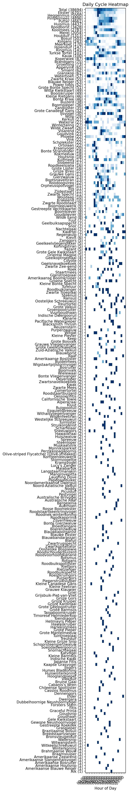
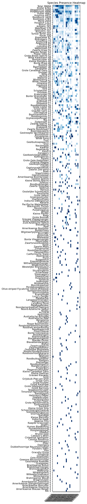
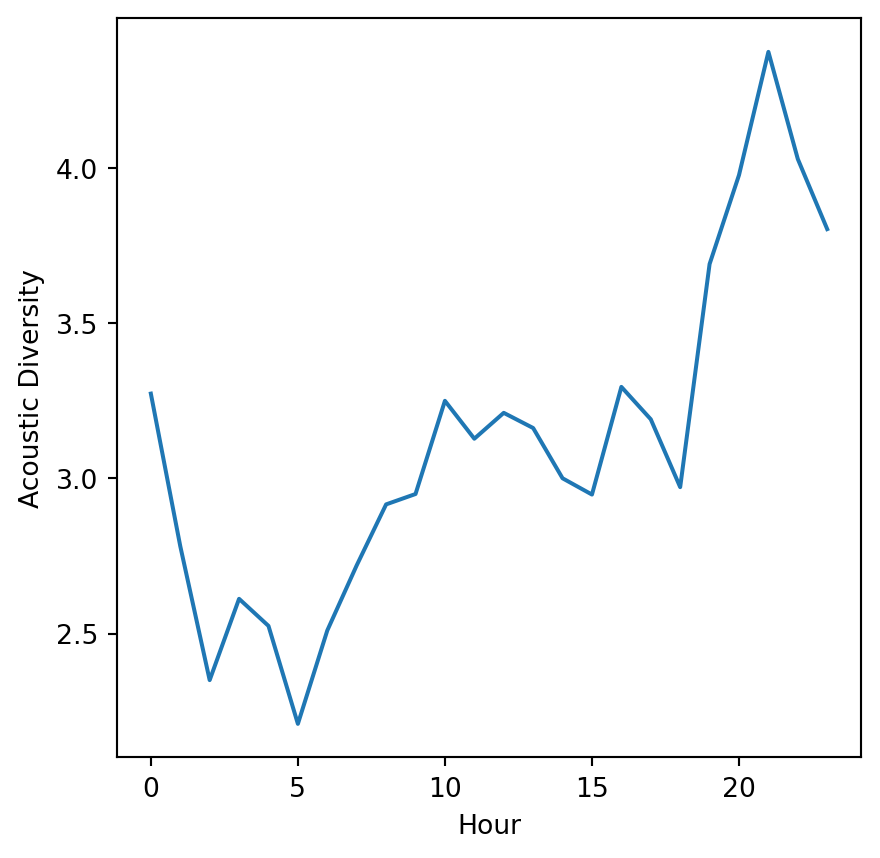

Ekster — 6701
Heggenmus — 5000
Pimpelmees — 4896
Putter — 4661
Huismus — 4437
Roodborst — 3428
Koolmees — 2783
Merel — 2054
Houtduif — 1313
Bosuil — 503
Kolgans — 243
Meerkoet — 170
Holenduif — 147
Ringmus — 141
Turkse Tortel — 101
Kauw — 100
Koperwiek — 87
Brandgans — 75
Groenling — 73
Appelvink — 65
Smient — 62
Glanskop — 61
Waterhoen — 57
Zwarte Kraai — 55
Blauwe Reiger — 53
Power tools — 52
Grote Bonte Specht — 51
Witte Kwikstaart — 49
Boomkruiper — 49
Bonte Kraai — 46
Kleine Rietgans — 46
Buizerd — 38
Boompieper — 36
Zanglijster — 35
Grote Canadese Gans — 32
IJsvogel — 30
Wulp — 29
Waterral — 27
Wintertaling — 27
Kerkuil — 27
Wilde Zwaan — 26
Visarend — 25
Goudvink — 23
Ortolaan — 22
Phoebe — 22
Scholekster — 22
Vink — 22
Kraanvogel — 20
Kokmeeuw — 18
Houtsnip — 18
Bonte Strandloper — 18
Slobeend — 17
Kuifmees — 17
Roodkeelsialia — 16
Grote Lijster — 16
Grijze Vireo — 15
Grauwe Gans — 13
Bootsnaveltiran — 13
Gierzwaluw — 13
Roodoogvireo — 12
Zwarte Specht — 11
Sijs — 11
Orpheusspotvogel — 11
Zijdestaart — 11
Woudaap — 10
Krakeend — 10
Boomklever — 9
Gestreepte Vechtkwartel — 9
Zwarte Roodstaart — 9
Boomleeuwerik — 9
Goudplevier — 8
Wilde Eend — 8
Regenwulp — 7
Nachtegaal — 7
Kwartel — 7
Geelbuiksapspecht — 7
Fuut — 7
Snor — 7
Kievit — 6
Grote Gele Kwikstaart — 5
Fazant — 5
Zanggors — 5
Oriental Magpie — 5
Geelkeelvliegenpikker — 5
Koningstiran — 5
Coyote — 4
Groene Specht — 4
Glanstroepiaal — 4
Tureluur — 4
Roek — 4
Roodbuikzanger — 4
Zwarte Troepiaal — 4
Kleine Bonte Specht — 4
Geelsnavelkoekoek — 4
Zwarte Zee-eend — 4
Staartmees — 4
Geelkoptroepiaal — 4
Amerikaanse Boomkruiper — 4
Treurtortel — 3
Blauwborst — 3
Purperzwaluw — 3
Steenuil — 3
Vuurgoudhaan — 3
Reuzenstern — 3
Zuid-Aziatische Valkuil — 3
Blacksmith Thrush — 3
Amerikaanse Boslijster — 3
Witgat — 3
Grote Valkuil — 3
Grote Bosvalk — 3
Grauwe Vliegenvanger — 3
Groenpootruiter — 3
Grote Geelkuifkaketoe — 3
Indische Dwergooruil — 3
Kanarie — 3
Pacifische Waterpieper — 3
Ransuil — 3
Raaf — 3
Kleine Plevier — 3
Oostelijke Schreeuwuil — 3
Buidelmees — 3
Keep — 3
Hawaiikraai — 2
Huiszwaluw — 2
Withalsvliegenvanger — 2
Roodstaartbuizerd — 2
Tuinlijster — 2
Struikorganist — 2
Ruigpootuil — 2
Scharrelaar — 2
Sneeuwgors — 2
Californische Towie — 2
Bosruiter — 2
Alpenkraai — 2
Zomertortel — 2
Epauletspreeuw — 2
Bonte Vliegenvanger — 2
Wigstaartpijlstormvogel — 2
Zwarte Mees — 2
Boomvalk — 2
Wielewaal — 2
Wilgenfeetiran — 2
Westelijke Schreeuwuil — 2
Zwartsnavelkoekoek — 2
Oeverloper — 2
Oessoerifitis — 2
Kluut — 2
Kwak — 2
Grote Geelpootruiter — 1
Grote Barmsijs — 1
Grote Pieper — 1
Indische Kwak — 1
Braziliaanse Bosuil — 1
Brahmaanse Wouw — 1
Braamsluiper — 1
Griel — 1
Grauwe Klauwier — 1
Goudhaan — 1
Bruine Gaai — 1
Breedstaartzanger — 1
Cassins Roodmus — 1
Cabanis's Wren — 1
Bronsvleugelduif — 1
Grote Mantelmeeuw — 1
Harlekijnmees — 1
Hawaiikruiper — 1
Hellmayrs Pieper — 1
Hooglandpieper — 1
Goudsnip — 1
Graspieper — 1
Graceful Prinia — 1
Bergelenia — 1
Witwangstern — 1
Dennengors — 1
Zilvermeeuw — 1
Witkeelschreeuwuil — 1
Amerikaanse Bosruiter — 1
Amerikaanse Blauwe Reiger — 1
Amerikaanse Houtsnip — 1
Alk — 1
Australische Brilvogel — 1
Amerikaanse Slangenhalsvogel — 1
Amerikaanse Zeearend — 1
Auerhoen — 1
Blafuil — 1
Winterkoning — 1
Australische Raaf — 1
Dwergara — 1
Fitis — 1
Gele Kwikstaart — 1
Gestreepte Koekoek — 1
Gewone Neushoornvogel — 1
Dubbelhoornige Neushoornvogel — 1
Forsters Stern — 1
Eider — 1
Chileense Spotlijster — 1
Grijze Kardinaal — 1
Grijze Gors — 1
Grijsbuik-Piet-van-Vliet — 1
Grijze Kruiper — 1
Kleine Barmsijs — 1
Japanse Fitis — 1
Kaapse Grasvogel — 1
Katvogel — 1
Humes Bladkoning — 1
Huiswinterkoning — 1
IJsgors — 1
Roodvoorhoofdkanarie — 1
Rietgors — 1
Rietzanger — 1
Papegaaiduiker — 1
Perzikkopagapornis — 1
Pestvogel — 1
Purpergors — 1
Picuiduif — 1
Pieperstruiksluiper — 1
Kramsvogel — 1
Kortteenleeuwerik — 1
Kleine Canadese Gans — 1
Kleine Feetiran — 1
Malabartok — 1
Langstaartmanakin — 1
Lucy's Zanger — 1
Laughing Dove — 1
Muskaatvink — 1
Monniksparkiet — 1
Mangrovepitta — 1
Noddy — 1
Noordamerikaanse Dwerguil — 1
Noord-Aziatische Valkuil — 1
Olive-striped Flycatcher (Olive-streaked) — 1
Oostelijke Bospiewie — 1
Kleine Grijze Snip — 1
Roodstaartkeerkringvogel — 1
Roodschouderbuizerd — 1
Roodnek-winterkoning — 1
Roodkapprinia — 1
Roestkruingors — 1
Roodbuikspecht — 1
Roodbuikspotlijster — 1
Boerenzwaluw — 1
Bloedtangare — 1
Rotgans — 1
Rotsmus — 1
Snornachtegaal — 1
Soendadwergooruil — 1
Spreeuw — 1
Steenloper — 1
Rosse Boomekster — 1
Schoorsteengierzwaluw — 1
Blauwkaporganist — 1
Blauwe Ekster — 1
Blauwbandarassari — 1
Timorese Helmlederkop — 1
Toendragors — 1
Treurduif — 1
Stormvogeltje — 1
Taigaboomkruiper — 1
Bonte Gierzwaluw — 1
Tuintroepiaal — 1
Vlekduif — 1
Watersnip — 1
Zwartkopsaltator — 1
Zwartrugspecht — 1

